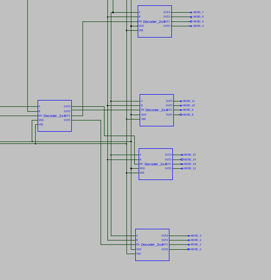
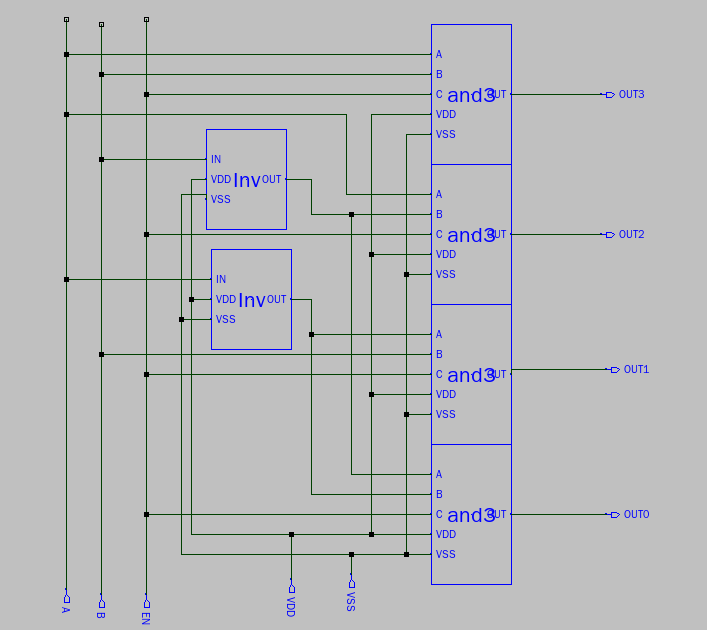

Decoder System¶
The Decoder is in 2x4 configuration and it also has an “Enable” port that allows the easy expansion to bigger Decoders.
(Schematic taken from Sue)
Inside the 2x4 Decoder, it is used 4 3-And gates and 2 Inverters as shown.
(Schematic taken from Sue)